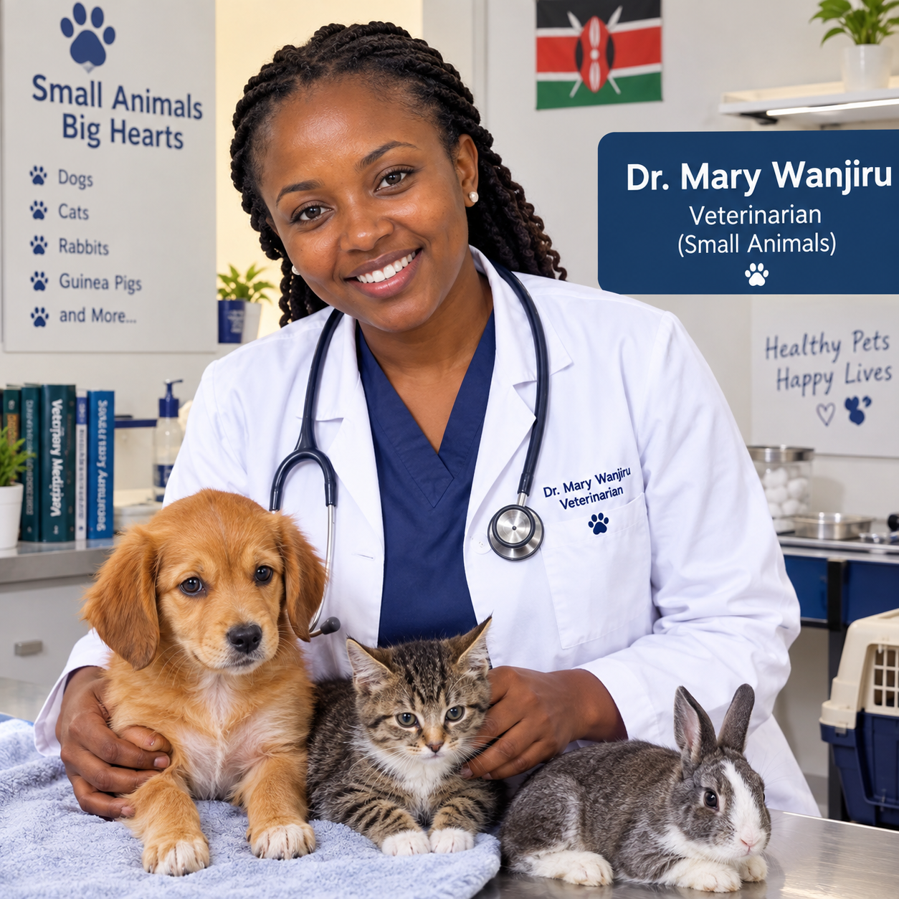
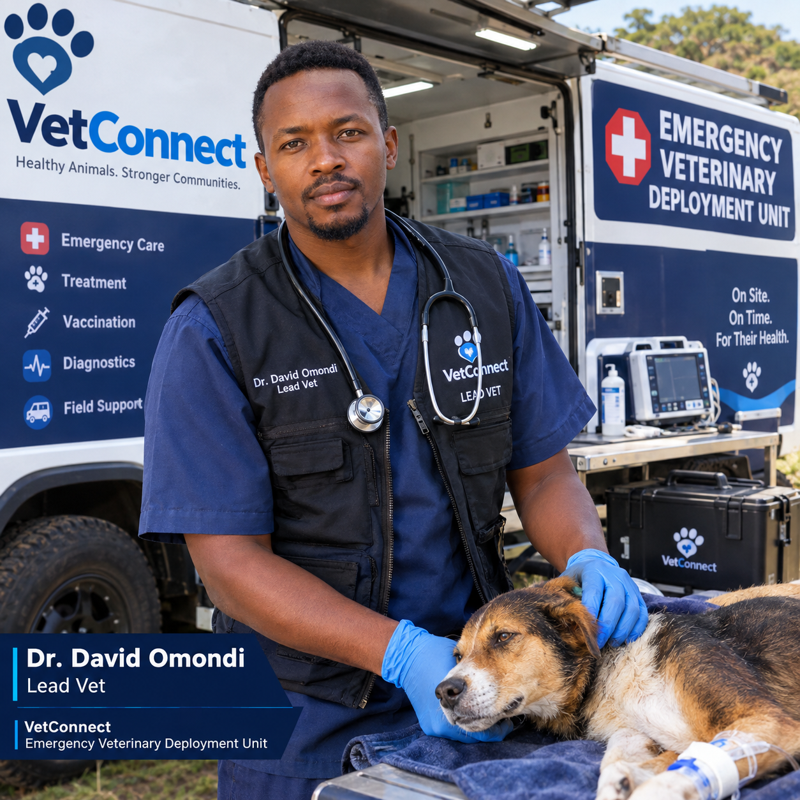
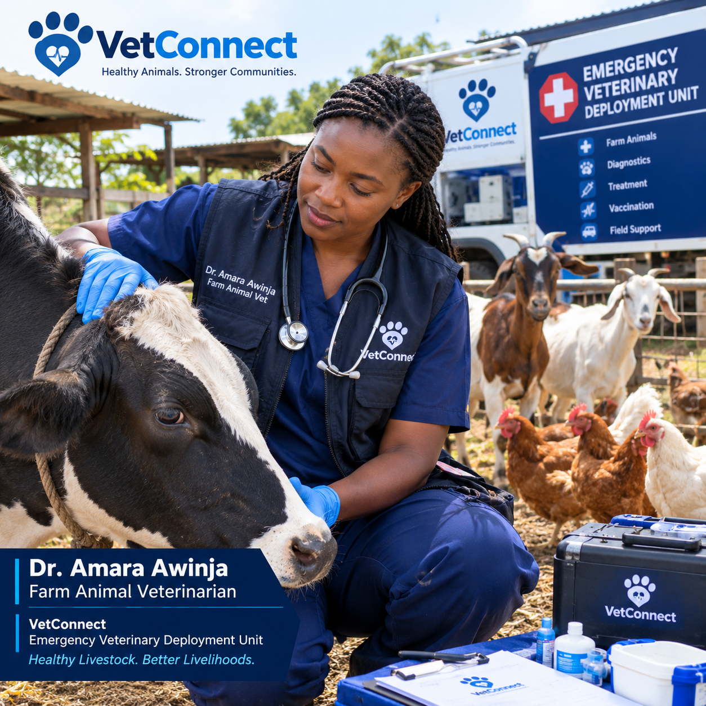
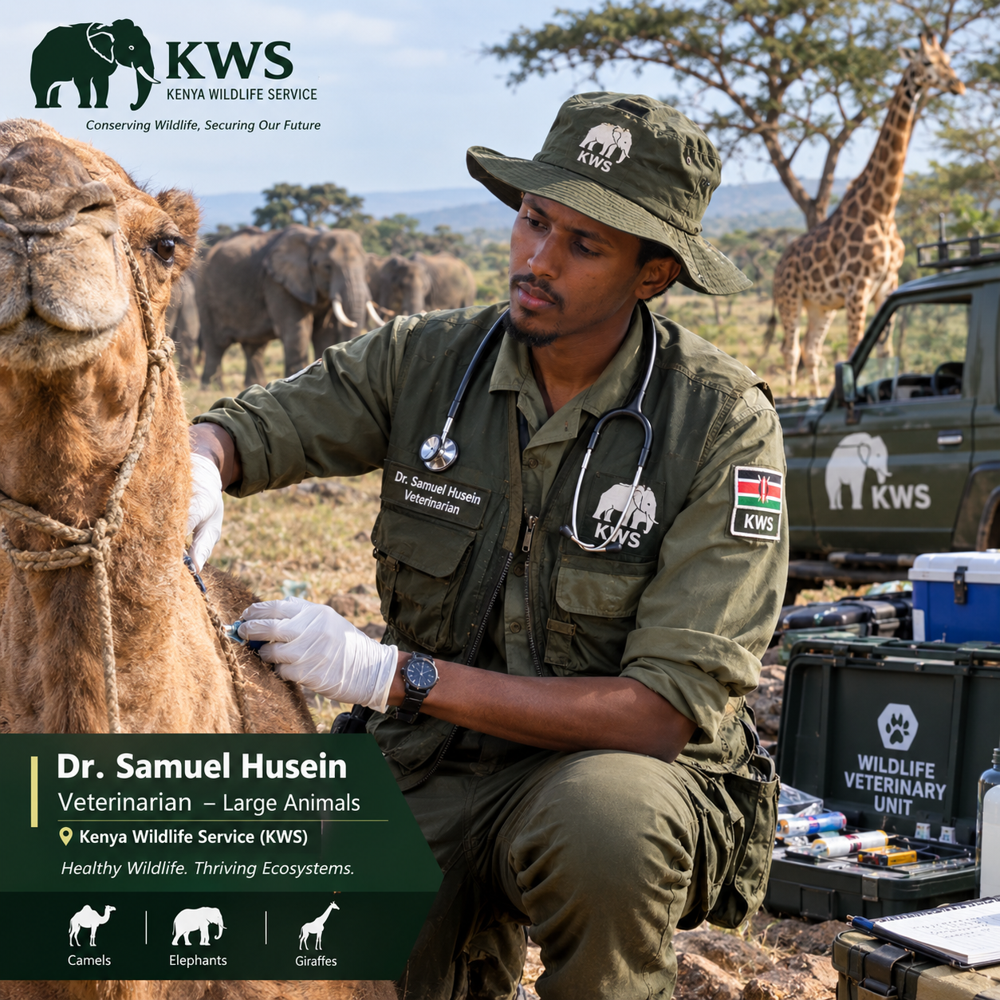
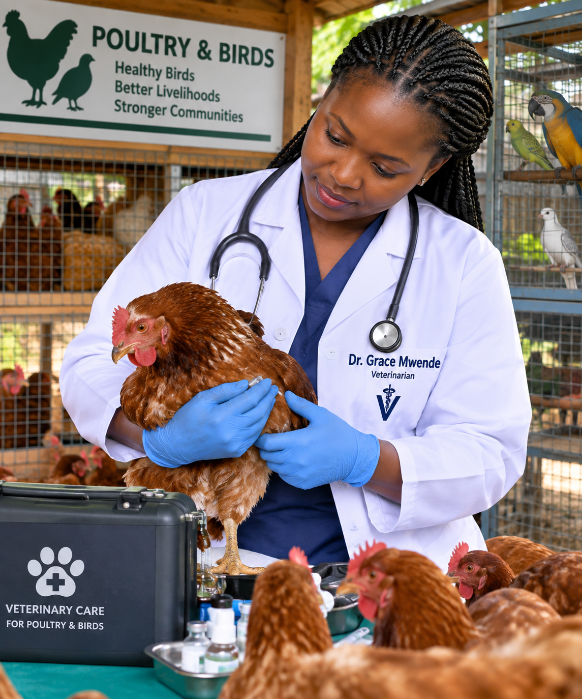

Dr. Mary Wanjiru
Small Animal & General Practice
12 years treating dogs and cats, she joined vetconnect to spend more time with patients and ease the Administration burden in her profession.
Every single veterinary doctor on our platform is a professional , every doctor has been critically vetted and rest assured they will provide the best of services.

Small Animal & General Practice
12 years treating dogs and cats, she joined vetconnect to spend more time with patients and ease the Administration burden in her profession.

Emergency & Critical Care
A trained leader in one of our Emergency veterinary deployment unit , he has seen alot, from swallowed socks ,100 poisoned swine;saved the all ,broken bone and many more , a 90% success rate.

Livestock & Farm Animals
Handles cows, goats, and poultry. Grew up on a farm before she ever picked up a stethoscope.

Large Animal & Equine Care
From North Eastern part of Kenya, He knows the big animal family starting from the
camels

Exotic Animals & Poultry
The right doctor for Rabbits, hens,Kanga and quils among other birds , she has mastered the birds anatomy.